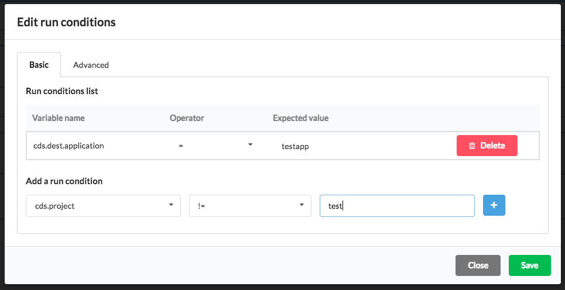

Run conditions on pipeline
In CDS if you want to launch a pipeline in your workflow only in specific cases you can add conditions. For example, if you want to run a pipeline automatically only if the value of git.branch is master.
To edit your pipeline condition on the user interface, you have to select a node under edition mode of your workflow and click on Edit run conditions like this:

There are 2 types of conditions:
Basic run conditions
With this type of conditions you can add multiple comparisons with a basic operators (=, !=, match for a regular expression, >=, >, <=, <). The variables syntax here are dotted syntax (example: cds.dest.application). Under the hood, if you use match operator it uses the Go regexp package, so you can use regular expressions that are supported in the Go regexp package.
If you add multiple basic run conditions, all of these must be satisfied to run the pipeline. So with basic conditions you can’t make an OR between multiple conditions, it’s always an AND. If you want to make more specific or advanced run conditions you have to use the second type of conditions (advanced).

Advanced run conditions
If you want some advanced run conditions, like for example make some computation over specific variables and then compare their values, you have the ability to use advanced run conditions. In fact, you are free to make any computation or comparison because advanced condition is a Lua script that returns a boolean (true if you want to run the pipeline or false if you don’t). In this case the variables syntax is in Unix case (example: cds_dest_application) and prefixed with cds_, git_ or workflow_. In general, . or - in CDS variable name must be replaced with _. For example, if you have a variable named cds.build.my-variable then in Lua you have to use it as cds_build_my_variable.
Pay attention, all types of variables are string. Inside the Lua editor on CDS you have the autocompletion of your variables, you just have to write cds_, git_ or workflow_ to see suggestions. Please be aware that you can’t have at the same time basic conditions and advanced conditions. The behavior when you have both is that ONLY advanced run conditions will be effective.
For example if you want to launch the pipeline if the value of cds_status is Success and git_branch is master OR if the value of cds_manual is true you have to write:
-- Pay attention! All variables value are string so you compare cds_manual with the string "true" and not true
return cds_status == "Success" and (git_branch == "master" or cds_manual == "true")
Another use case is to enable auto-prod during working days only (not Saturday and Sunday):
return os.date("%w") < "5"
Or if you also want to block deployment on your production after 6pm:
return os.date("%w") < "5" and os.date("%H") < "18"

You can also use regular expression in your Lua condition, for instance:
-- this example checks if current application beginning with 'abc'
-- don't forget to import the regular expression module
local re = require("re")
return re.match(cds_application, "abc.*") == cds_application
Functions re.find, re.gsub, re.match, re.gmatch are available. These functions have the same API as Lua pattern match.